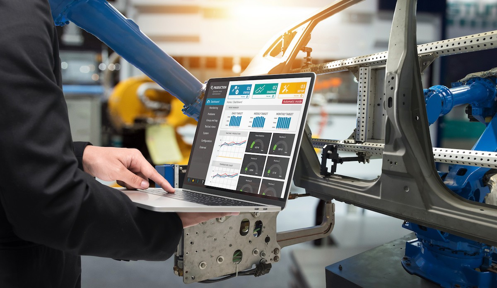
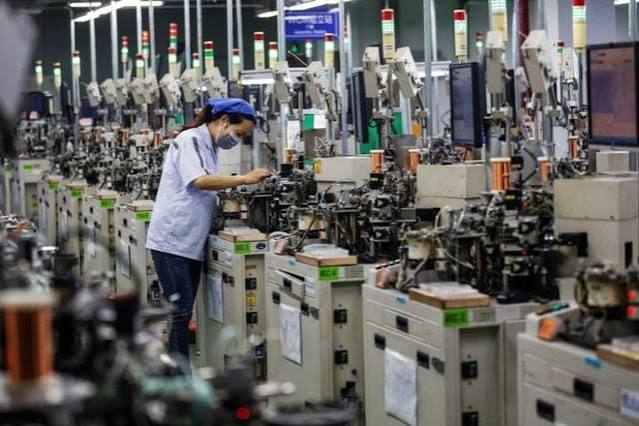
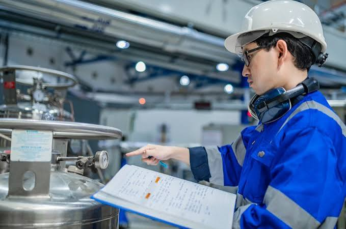
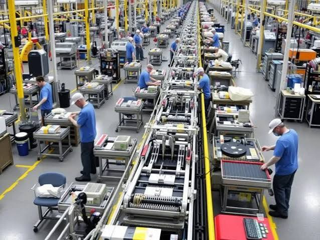
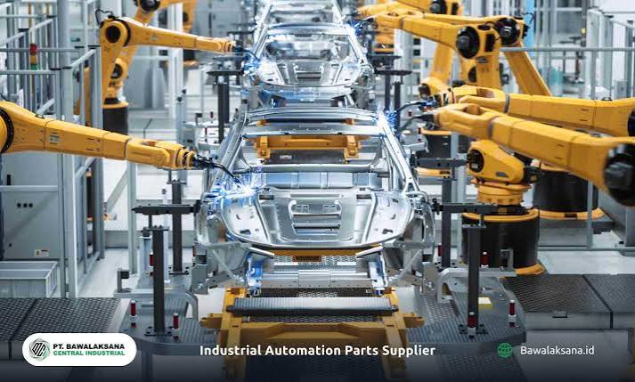
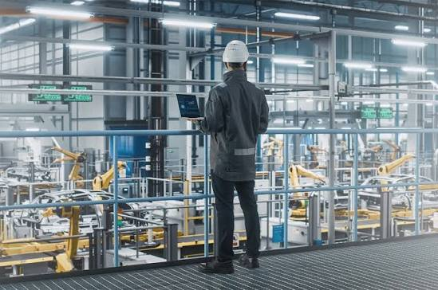

ENGINEERING EXCELLENCE, MANUFACTURING THE FUTURE.
Solusi manufaktur terintegrasi untuk mendukung kualitas dan efisiensi industri
Mengenal NusaTech Manufacturing

NusaTech Manufacturing merupakan perusahaan manufaktur yang berfokus pada proses produksi dan perakitan komponen sertaperalatan industri. Kami mengutamakan kualitas produk,ketepatan proses, dan efisiensi operasional.
Melalui penerapan teknologi dan pengendalian kualitas,NusaTech Manufacturing berkomitmen untuk mendukung kebutuhanindustri dengan solusi manufaktur yang andal dan berkelanjutan.
Kami berkomitmen menghadirkan proses manufaktur yang mengutamakan kualitas, produktivitas, keselamatan kerja,dan kepuasan pelanggan.
- Menjaga kualitas produk melalui proses pengendalian mutu.
- Mengoptimalkan proses produksi untuk meningkatkan efisiensi.
- Mengutamakan keselamatan kerja dan ketepatan waktu dalam memenuhi kebutuhan pelanggan.
Dengan memperhatikan standar kualitas dan efisiensi operasional, perusahaan terus berupaya menghasilkan produk yang sesuai dengan kebutuhan pelanggan serta mendukung perkembangan sektor industri.
Tenaga Kerja
Mesin Produksi
Proyek Produksi
Tahun Pengalaman
Layanan
Layanan Utama Kami

Produksi Manufaktur
Menyediakan layanan produksi dan perakitan komponen industri dengan memperhatikan kualitas, ketepatan, dan efisiensi proses.

Pengendalian Kualitas
Melakukan pemeriksaan dan pengendalian kualitas untuk membantu memastikan produk memenuhi spesifikasi dan standar yang ditetapkan.

Perakitan Komponen
Mendukung proses perakitan komponen dan peralatan industri sesuai kebutuhan serta spesifikasi pesanan pelanggan.


Teknologi Produksi untuk Mendukung Kebutuhan Industri
Pemanfaatan teknologi dan peralatan produksi membantu mendukung proses manufaktur yang terstruktur dan konsisten.
- Mendukung proses produksi dan perakitan komponen industri.
- Menggunakan peralatan yang sesuai dengan kebutuhan proses.
- Memperhatikan ketepatan proses untuk menghasilkan produk sesuai spesifikasi.
Teknologi produksi yang sesuai dapat membantu perusahaan meningkatkan konsistensi proses dan memenuhi kebutuhan pelanggan.

Pengendalian Kualitas pada Setiap Tahapan Produksi
Pengendalian kualitas menjadi bagian penting untuk memastikan produk sesuai dengan spesifikasi dan persyaratan yang ditentukan.
Pemeriksaan dilakukan dengan memperhatikan kesesuaian bahan, proses pengerjaan, dan hasil akhir produk.
- Memeriksa kesesuaian produk dengan spesifikasi.
- Mengidentifikasi potensi ketidaksesuaian produk.
- Mendukung perbaikan kualitas secara berkelanjutan.

Meningkatkan Efisiensi Operasional
Pengelolaan proses kerja yang baik membantu penggunaan waktu, tenaga kerja, bahan baku, dan mesin secara lebih efektif.
- Mengoptimalkan penggunaan sumber daya produksi.
- Mendukung pengurangan pemborosan dalam proses kerja.
- Mendorong perencanaan produksi yang lebih terarah.
Efisiensi operasional membantu mendukung produktivitas dan kelancaran pemenuhan pesanan pelanggan.
Mengutamakan Keselamatan dan Kesehatan Kerja
Keselamatan dan kesehatan kerja merupakan aspek penting dalam aktivitas manufaktur, terutama pada penggunaan mesin dan penanganan material.
Lingkungan kerja yang aman membantu mendukung kelancaran kegiatan produksi.
- Meningkatkan kesadaran terhadap potensi bahaya kerja.
- Mendorong penggunaan alat pelindung diri sesuai kebutuhan.
- Mendukung penerapan prosedur kerja yang aman.
Komitmen Kami
STANDAR DAN KOMITMEN PERUSAHAAN
Proses Produksi Terencana
Mengutamakan perencanaan proses kerja yang terstruktur untuk mendukung kelancaran kegiatan produksi.
Standar Kualitas
Memperhatikan kesesuaian produk dengan spesifikasi dan persyaratan kualitas yang telah ditentukan.
Pengelolaan Material
Mendukung pengelolaan bahan baku dan material agar kebutuhan produksi dapat direncanakan dengan baik.
Efisiensi Operasional
Mendorong pemanfaatan waktu, tenaga kerja, mesin, dan material secara efektif dalam proses manufaktur.
Keselamatan Kerja
Menempatkan kesadaran keselamatan kerja sebagai bagian penting dalam aktivitas produksi dan penggunaan mesin.
Kepuasan Pelanggan
Berupaya memahami kebutuhan pelanggan melalui komunikasi yang baik dan perhatian terhadap spesifikasi pesanan.


Prabowo
Bidang Pengadaan
Komunikasi yang baik dan perencanaan kebutuhan material merupakan aspek penting dalam mendukung kelancaran proses produksi.

Fani
Bidang Produksi
Proses produksi yang terencana membantu perusahaan menjaga kelancaran pekerjaan dan memenuhi kebutuhan manufaktur sesuai spesifikasi.

Alia
Bidang Quality Control
Pemeriksaan kualitas merupakan bagian penting untuk memastikan hasil produksi sesuai dengan persyaratan yang telah ditetapkan.

Purwatama
Bidang Logistik
Pengelolaan material dan koordinasi pengiriman berperan dalam mendukung ketersediaan kebutuhan produksi secara tepat waktu.

Dani
Bidang Teknik
Perawatan peralatan dan perhatian terhadap prosedur kerja menjadi faktor pendukung kelancaran aktivitas manufaktur.
Portofolio
PROYEK DAN AKTIVITAS MANUFAKTUR
- Semua
- Produksi
- Perakitan
- Kualitas


Tim Kami
PROFESIONAL DI BIDANG MANUFAKTUR

Direktur Utama
Manajemen Perusahaan
Manajer Produksi
Perencanaan dan Pengendalian Produksi
Manajer Quality Control
Pengendalian Kualitas ProdukKontak
HUBUNGI NUSATECH MANUFACTURING